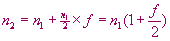
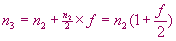
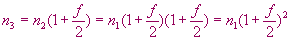
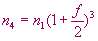

| Interesting Facts about Population Growth Mathematical Models |
Scientists, engineers, and musicians are examples of people that normally make progress in their corresponding specialties by studying and learning all they can about their area of interest and making small incremental contributions. Many times these can be very important contributions. In other words, these people use the past and present knowledge as a stepping stone for the advancement of the state-of-the-art in their fields of interest.
The evolution of the mathematical models used to describe population growth and balance is a great example of how this field has evolved over the years. This page starts with a quick and simple description of this evolution and then presents interesting and fascinating aspects of some of them. Following that there is one more section with the detailed calculations of the Squirrels' Birth Rate based on the population model.
1) Population Growth Mathematical Models
Unlimited Growth. The first mathematical model, referred to as the classical Malthusian scheme for population growth, is based on the work by Thomas R. Malthus (1766-1834). In The Principle of Population essay that he published in 1798, Malthus explained in fundamental and brilliantly simple terms his theories of human population growth and the connection between over-population and misery1. One of the fundamental concepts that he brought up is that of unlimited population growth.
The mathematical model based on this idea is that the population size for one generation depends on the size of the previous generation, and it is a multiple. This is expressed mathematically by the following equation:
(1) where:
t represents the time period (which could be minutes, weeks, years, etc. depending on the species being considered), pt represents the population size at time t. The units of time could be hours, days, years, etc., pt+1 represents the population size at the next time period. Again, it could be the next hour, next day, next year, etc., and r referred to as the Malthusian factor, is the multiple that determines the growth rate. This type of equation is called a difference equation because it allows you to find out the value of p at different discrete time intervals -- say at years 3, 4, 5, etc. You couldn’t use this to find out the size of p when t = 3.578 2, because t = 3.578 does not represent a discrete time.
The value r in the previous equation has a strong impact on how fast the population will grow. To help you understand how this works, get your calculator and try this simple formula. Start with an initial value for the population size (say p0 = 5) and one of r (say r = 3). Substitute the numbers to obtain p1 , then p2 , etc. Notice how quickly the population can grow. To help you visualize this, the following graph shows several population growths, all of which start with an initial population size of 2, i.e.
and different values of r,
As you can see, all the different curves have a similar shape. They are referred to as J-shaped curves. Graph the data from your own calculations. It should also produce a J-shaped curve. Notice that the difference in the value of r between the yellow and blue curves is only 0.02, but the population size is exactly double (4,000 vs. 2,000) after 40 time steps. The mathematical name for this type of growth is exponential growth3.
This growth equation can be used in cases where there is truly this type of growth. For example, when a new species arrives to an island where there is plentiful of food, perfect conditions for reproduction, and no predators, or when a scientist starts growing bacteria under perfect conditions, one can certainly observe this (almost perfect) type of growth; although, not forever. That is why other mathematical models were developed.
Natural Equilibrium. Robert H. McArthur and Edward O. Wilson helped found the field of population biology during the 50’s and 60’s. Robert McArthur felt that mathematical models should be developed to describe the patterns that he found in nature instead of just providing simple textual descriptions. Their work started with the analysis of ant and bird population data. Through the analysis of a lot of experimental data they observed that the population size remained steady, even though the exact species varied. They were able to develop a very intricate mathematical model for this equilibrium that was published in 1962 (not presented here). Their conclusion after all their work with many different species and many different experiments was that:
Nature has this great tendency of balancing things out and reaching a very harmonious equilibrium. If nature were left alone, equilibrium would exist and populations would remain close to them.
Limited growth. The problem with the equation (1) model is that the population continues to grow unlimited over time. A major contribution came from Pierre Francois Verhulst, a scientist interested in population growth. Verhulst was born in 1804 in Brussels, Belgium. He showed in 1846 that the population growth not only depends on the population size but also on how far this size is from its upper limit.
Let's look at the mathematics behind this. Do you remember the definition of carrying capacity introduced in the fundamentals of population section? Carrying capacity is the maximum population size that a given habitat can support. We’ll denote that as K. If the population is far below K, it would tend to grow rapidly, but as it approaches K, the growth would slow down. If the population size would exceed its upper limit K, the growth would actually be negative!4. In order to model this, Verhulst modified equation (1) to make the population size proportional to both the previous population and a new term:
(2) This term reflects how far the population is from its maximum limit. Let's assume that the carrying capacity K is 2000. If the population is just starting with a small value (say 50 or less), then this new term will be very close to one. However, as the population value grows and gets closer to K, this new term will become very small and get to zero or even negative, providing the right feedback to limit the population growth. The following table shows values for this term for different values of pt when K is 2000:
pt (K-pt ) / K 0 1.000 10 0.995 50 0.975 200 0.900 1000 0.500 1990 0.005 So the equation using this new term and named after Verhulst is:
(3) This equation is also known as a logistic difference equation. Comparing it with equation (1) it is nonlinear in the sense that one can’t simply multiply the previous population by a factor. In this case the population pt on the right of the equation is being multiplied by itself. One of the nice things about this equation is that it is relatively easy to solve and it is also easy to see how it behaves by looking at a chart produced by it. The following chart was produced with K = 1000, r = 1.3, and an initial value p0 of 0.1:
The curve produced by the logistic equation resembles an S. That is why it is called an S-shaped curve or a Sigmoid. As you can see, when the population starts to grow, it does go through an exponential growth phase, but as it gets closer to the carrying capacity (approximately when the time step reaches 37), the growth slows down and it reaches a stable level. There are many examples in nature that show that when the environment is stable the maximum number of individuals in a population fluctuates near the carrying capacity of the environment. However, if the environment becomes unstable, the population size can have dramatic changes.
The logistic growth equation is a useful model for demonstrating the effects of density-dependent mechanisms in population growth. However, its utility in real populations is limited because the dynamics of populations are complex and because it is difficult to come up with the real value for K in a given habitat. In addition, K is not a fixed number over time; it is always changing depending on many conditions. In the following sections we’ll briefly describe other factors and models to better model population growth.
Age Structure Dependencies. Up until now we assumed that the size of the population in the next time period depends, using one factor, on the whole size of the current population. It does not take into account the fact that not all members of the population will reproduce and that reproduction depends on the individuals age. In essence it uses a simplistic probability average. Equation (1) could be expressed as a function as follows:
(4) Equation (4) simply says that the population for the next time period is a function (or depends) on the present population. To take into account the age structure dependencies, equation (4) becomes:
(5) This means that the population is now a function of the current population, the population the year before, the year before that, etc. Please note that f implies a generic function and it is different in equation (4) and (5). Also, the function for each of the previous populations could be very different. Equation (5) can become very complicated and difficult to solve!
Competition. One other aspect that we have not taken into account in the previous equations is that of competing species. Of course, one could say that the r factor takes that into account, and it does, but it is difficult to accurately model real populations that way.
Lets assume that there are two species competing for the same resource and that we can use the logistic equation to model their independent growth. We can essentially use the same equation (3) for each of the two populations p and q after adding a new term to get:
(6)
(7) The sub-indexes 1 and 2 are used to indicate that r1 , K1 , and c1 are different from r2 , K2 , and c2 , each set reflecting the characteristics of p and q respectively. The new term in equation (6) c1 qt (and equivalently in equation (7) c2 pt ) is the one that takes care of the competition factor. As the population of the other species increases, this new term increases, and as it is subtracting, it slows down the growth of p. One could say that the carrying capacity under this scenario depends on the other population and becomes K1 – c1 qt. A very interesting thing is that this carrying capacity in this set of coupled equations becomes dynamic. Instead of being a constant, it is a value that changes over time. Something else to notice is that if both c’s are zero, then equations (6) and (7) have the exact form as equation (3).
A predator and prey model. Trying to take into account two populations where one is the prey and the other the predator is similar to the previous case. The difference is that the species are at different trophic levels. As there are more predators, the prey population starts decreasing. On the other hand, as the number of prey increases, the predator population benefits and increases as well. The equations to model this behavior look like this:
(8)
(9) These equations were discovered independently by the American Alfred Lotka (in 1925) and the Italian Vito Volterra (in 1926) and are known as the Lotka-Volterra equations. You will notice that essentially the prey population p increases, just as before, based on the term:
but is destroyed dependent on the term:
Similarly, the predator population q decreases based on the term:
but increases based on the term:
It is interesting to note that the last two terms on both equations (8) and (9) are dependent on both the prey and predator populations. The Lotka-Volterra equations have evolved and there are many different versions of equations based on the concepts introduced 75 years ago.
In conclusion, several different concepts and models were described in the previous paragraphs, but each of them separate. A real and accurate population model would need to consider most of them at the same time. Imagine an ecosystem where one is trying to model many interdependent species, and it is easy to see how the mathematical models can get quite complicated.
2) Interesting and complex aspects of the basic logistic equation.
We will now describe and show some very interesting aspects of the logistic difference equation, equation (3). Most of this work was collected for the first time by Robert May in a classic article published in Nature in June of 1976. Robert May started his career as a physicist but then did his post-doctoral work in applied mathematics. He became very interested in the mathematical explanations of what enables competing species to coexist and then in the mathematics behind populations growth.
When people started working with this equation they noticed an interesting behavior depending on the value of r. We will illustrate their findings with graphs produced by running the equation with different values of r starting with r = 0. Unless mentioned otherwise, will use a value of K = 1000 in the following graphs.
Decline to Zero. When the value of r if between 0 and 1, the population will eventually decrease to zero. This is illustrated in the following graph where we used an initial population of 500 individuals or p0 = 500:
As you can see, the population of 500 will decrease to zero. Increasing the value of r towards the value of one slows down the decline, but nevertheless the population goes to zero.
Normal Population Growth. When the value of r is between 1 and 3, the population will increase following the sigmoid curve towards a stable value. Here is the graph that illustrates this:
In this case the initial population is P0 = 0.01 and the three cases show very different speeds towards achieving their stable values. Their stable values also differ considerably between 200, 500 and 636.3636. One more thing to notice is that when the value of r is larger than 2.4, the equation shows an oscillation which is larger as it gets closer to 3.0, but in all cases the oscillation dies down and the population value settles down to its steady value.
One very interesting aspect of the logistic equation is that the long-term value5 of the population will be the same regardless of where it starts. This is shown in the next graph where we have repeated the same setup as used for the previous graph except for the starting population values. As you can see, with very different p(0)'s the long term stable values are exactly the same, 200, 500 and 636.3636. Here is the chart:
Multiple stable values. When the value of r reaches the magic value of 3, something strange happens. The population does not reach one steady value. It gets to a point where it oscillates between two steady values! This means that the population does very well one season and increases in size dramatically. The following season there is overpopulation scrambling for the same resources and many die decreasing the size. The population size goes up and down between two values.
As we continue increasing the value of r, we reach a point when r is 3.4495 where instead of the population switching on and off between two values, it switches between four values! This effect can be seen several more times when the oscillation happens between eight values (when r = 3.56), sixteen values (when r = 3.596), etc. The following charts shows three graphs of this behavior:
One might think that the last chart is really oscillating randomly, but it is jumping up and down between 8 values. Will this continue as we increase the values of r? Lets see the next section.
Chaos. As we continue to increase the value of r we reach another magic point, when r reaches a value of 3.7. At that point it looks like the population jumps in a very random and unpredictable way, and it behaves this way until it reaches a value 4.0. This behavior that looks very much like random, but really isn't, is called chaos6. Look at the following graph where we used a value of r = 3.725:
Even though there seems to be some pattern, if you look closely, it is really not repeating the values from one period to the next. Isn’t it amazing that such a simple formula, which was working in a simple way, describes so many different behaviors reaching all the way to the complexities of chaos? Even though the changes from period to period seem absolutely random, there is clearly some regularity to the oscillations.
The deterministic logistic equation, meaning an equation which can predict the same values over time, produces what looks like random behavior. The last aspect to notice regarding this chaotic phenomena is how sensitive the behavior is to the values of r. It behaves so differently by simply varying the values between 0 and 4.0 and very small changes can produce quite different results!
Boom-and-Bust Curve. Some populations go through periods where their sizes suddenly increase dramatically for a few generations and then go back to their normal stable numbers. Insects are a common species that go through a tremendous growth for a few weeks, followed by a sudden collapse. Some species can increase their number even more than a thousand times. As you can see in the next graph, the growth starts exponentially but is quickly followed by a sudden collapse.
An example of this behavior is a pest in the Swiss Alps known as the larch bud moth which goes through 8 or 9 year cycles during which its numbers multiply up to 100,000 times!7
3) Complexity of the mathematical models
By now you probably got the idea that the mathematical models of population growth, when incorporating many of the issues described in the previous sections, can become quite complex, especially as the models need to map to real physical characteristics of the natural world. Just imagine a predator that switches prey from time to time. It can be very challenging but when one finds a mathematical model that works, it is very rewarding! Here follows an interesting example.
Maria J. Milicich, an Ecologist, has studied a very colorful fish found in the Great Barrier Reef in Australia known as damselfish8. These damselfish lay their eggs at the reef's bottom. The full moon causes the larvae to hatch and come out about once a month. The larvae leave the reef and about 20 days later return as mature larvae. Milicich was working with data consisting of eggs released from nests, number of larvae that hatched, and the number of mature larvae that return to the reef.
In looking specifically at the data for the mature larvae, Milicich expected the numbers to be close to an equilibrium point; however, she found that the numbers varied dramatically. Some months she found only a few larvae and in others she found thousands of them! The feeling was that these fluctuations were random and attributed to weather changes, unknown diseases, sampling errors, or what is referred to as environmental noise (unknown causes in the environment).
Milicich used linear models, which did not work very well, so decided to model the numbers of mature larvae using a non-linear model. Her approach was to compare the linear and the non-linear models to see which one predicted the numbers more accurately. She and her team8 played with hundreds and hundreds of environment variables to try to improve the predictability of the non-linear model. They finally came up with a model that took into account: (a) the moon's phase, (b) the water turbulence around the reef, and (c) the wind speed. This non-linear model proved to be significantly better than the previous linear model. Not only that, but these three physical variables made perfect ecological sense. They were able to better understand the roles that the moon, water turbulence and wind have on the overall damselfish population process. When the three combine positively, the larvae reach maturity in great numbers, but when they work against each other, their numbers are very small.
4) Calculation of the Squirrels Birth Rate
If you run an experiment several times to observe the squirrel’s population growth, you might notice that the growth is not always the same. The reason is that there is some variability. Squirrels will not always have the exact same number of offspring, and some might die because of some other causes. The model attempts to model this behavior. By setting up the model with 60 trees and introducing two squirrels in year 75, the results of five consecutive runs were:
Year Run 1
Run 2
Run 3
Run 4
Run 5
Average
75
2
2
2
2
2
76
6
5
6
4
5
77
16
11
16
9
11
78
40
27
41
21
27
79
101
67
100
52
67
77.4
Running it several times is equivalent to making observations in different locations, under different conditions, in different periods of times, etc. It makes the results more general and valid. That means that the results are not only valid for a specific group of squirrels in a specific location. The conclusions or results can be then applied to squirrels in general.
The average squirrel population in year 79 after five runs is 77.4 squirrels. This is the number that will be used in this example. Now, let's try to come up with the mathematical growth model. Let's assume that ni represents the number of squirrels on year I and f represents the birth rate. Then n1 represents the number of squirrels in year one and n2 represents the number of squirrels in year two (or the following year). n2 can then be expressed as:

Let's see what this formula represents. The term n1/2 represents the number of couples (if there are 6 squirrels it is assumed that there are 3 couples). Multiplying the number of couples by f (the birth rate) will give the number of squirrels that will be born. Adding this to the current population (n1) gives you the expected population on the following year. Now lets write the equivalent equation for n3:

and substitute the value of n2 from the previous equation to produce:

Similarly, you can now write the equations for n4 and then n5 as:

Now we'll substitute the values that we know on this last equation. From the table we know that n5 is 77.4 and n1 is equal to 2, so the last equation will become:
Solving the equation for f
By doing the arithmetic operations one can finally obtain the value of f:
f = 2.988
which gets rounded to 3, giving us the final answer of:
Birth Rate of 3
As was indicated at the beginning of this section, when you do multiple relevant experiments combining the data in a logical way and following a formal mathematical method to find out the result, the answer is more accurate and provides a more valid portrayal of the real birth rate.
5) General Growth Rate Equation
From the work on the previous section we can write a general formula that models the growth rate:
where p0 represents the initial population, n the number of years, f the birth rate, and pn the population in year n. For our case, where f is equal to 3, the formula becomes simply:
References and Notes
[Note 1] -- The Core Principles of Malthus are:
- Food is necessary for human existence.
- Human population tends to grow faster than the power in the earth to produce subsistence, and that
- The effects of these two unequal powers must be kept equal.
- Since humans tend not to limit their population size voluntarily, population reduction tends to be accomplished through the "positive" checks of famine, disease, poverty and war.
[Note 2] -- Depending on the species that one is trying to model, a difference equation might be accurate enough. However, when the model requires an equation that can find out the size of the population at any point in time, you would need to use what is called a differential equation. The name sounds very similar, but the mathematics behind the differential equations is more complicated.
[Note 3] -- It is called exponential growth because there is another growth equation, based on the e constant elevated to the exponent rt, which produces the same curve shape:
[Note 4] -- The Verhulst’s equation also applies to the theories of learning. What is learned depends on the amount of information learned before. Learning first increases, but after some time the learner becomes saturated, so that more effort is required to acquire more knowledge.
[Note 5] -- The steady values where the population settles in the long run are referred to as attractors because regardless of where the population starts, above or below the final stable value, the population size will be attracted to this value.
[Note 6] -- The word "chaos" was coined as a mathematical term by James A. Yorke and Tien Yien Li in their classic paper "Period Three Implies Chaos" [American Mathematical Monthly 82, no. 10, pp. 985-992, 1975]
[Reference 7] -- C. Zimmer, Science 283,83 (1999)
[Reference 8] -- P. A. Dixon, Maria J. Milicich, and G. Sugihara, Science 284, 1528 (1999)
[Reference 9] -- http://mathworld.wolfram.com - "A convenient, comprehensive, and interactive mathematics encyclopedia intended for students, educators, math enthusiasts, and researchers."
Last Updated:
Arcytech
Java Home
Page
Provide
Feedback